Next: TKE flux from wave-breaking Up: The turbulence model Previous: Calculate steady-state Richardson number Contents
INTERFACE:
subroutine internal_wave(nlev,NN,SS)DESCRIPTION:
Imposes eddy viscosity and diffusivity characteristic
of internal wave activity and shear instability when there is extinction
of turbulence as suggested by Kantha and Clayson (1994).
In this case, the new values of  and
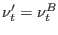,
defined in (45),
are used instead of those computed with the model.
and
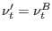,
defined in (45),
are used instead of those computed with the model.
When k is small (extinction of turbulence, diagnosed by
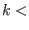klimiw),
 and 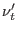 are set to empirical values typical
in the presence of internal wave activity (IW) and shear
instability (SI). This model is described by
and 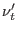 are set to empirical values typical
in the presence of internal wave activity (IW) and shear
instability (SI). This model is described by
| 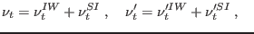 | (206) |
| 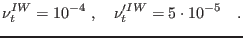 | (207) |
| 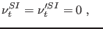 | 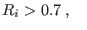 | (208) | |
| 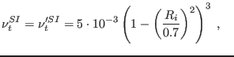 | 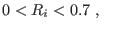 | (209) | |
| 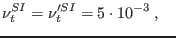 | 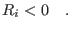 | (210) |
USES:
use turbulence, only: iw_model,alpha,klimiw,rich_cr use turbulence, only: numiw,nuhiw,numshear use turbulence, only: tke,num,nuh IMPLICIT NONEINPUT PARAMETERS:
integer, intent(in) :: nlev REALTYPE, intent(in) :: NN(0:nlev),SS(0:nlev)REVISION HISTORY:
Original author(s): Karsten Bolding, Hans Burchard,
Manuel Ruiz Villarreal
Karsten Bolding 2012-12-28